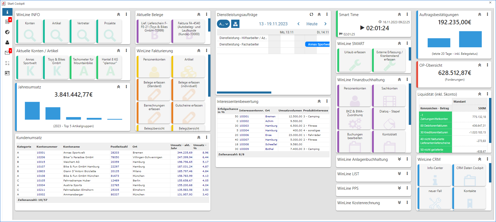

Die WinLine Cockpits der Applikationen WinLine START bzw. WinLine INFO bilden den Startpunkt nach dem Programmeinstieg.

Diese Cockpits können pro WinLine Benutzer individuell gestaltet werden (siehe auch Zusätzliche Funktionen im Cockpit) und dabei u.a. folgende Elemente beinhalten:
ü Überschrift
Mit Hilfe einer
Überschrift kann ein Ordner / Container für einzelne Einträge gebildet werden,
wobei man hier von einem sogenannten "Widget" spricht. Dieses dient zur
Zusammenfassung von mehreren Einträgen, z.B. "Meine täglichen Auswertungen".
ü Menüpunkt
Mit dem Element
"Menüpunkt" können Menüpunkte aus allen WinLine Applikationen (ausgenommen
WinLine ADMIN) im Cockpit integriert werden. Hiermit kann erreicht werden, dass
vom Cockpit aus direkt das gewünschte Programm in der entsprechenden Applikation
aufgerufen wird.
ü Aktuelle Objekte
Mit dem Element
"Aktuelle Objekte" können die zuletzt in der WinLine verwendeten Objekte in Form
einer Kachel angezeigt werden. Über die Anwahl solch einer Kachel kann eine
Aktion für das jeweilige Objekt ausgeführt werden.
ü Liste
Mit dem Element "Liste"
können Auswertungen abgerufen werden, welche im Programm WinLine LIST (WinLine
LIST - Liste - Assistent) erstellt wurden.
ü Report
Mit dem Element "Report"
können vom Programm vorbereitete Auswertungen abgerufen werden.
ü OIF
Das Element "OIF"
(Objektorientiertes Info Formular) ermöglicht es allgemeine oder objektabhängige
Information im Cockpit anzeigen zu lassen.
ü MesoCalc
Mit dem Element "MesoCalc"
kann eine Grafik, welche im MesoCalc (WinLine INFO - Info) definiert wurde,
angezeigt werden.
ü WinCalc
Das WinCalc stellt die
alternative zu Microsoft Excel in WinLine dar und bietet neben einer
Tabellenkalkulation, Formeln und Funktionen, einem Berechtigungssystem, sowie
Ex- und Importfunktionen, auch den Datenzugriff auf fast alle
Datenquellen-Widgets des Cockpits.
ü CRM-Eintrag
Mit dem Element
"CRM-Eintrag" kann direkt aus dem Cockpit heraus ein Workflowstartpunkt oder ein
Aktionsschritt gestartet werden.
ü Makro
Mit dem Element "Makro" kann
ein Makro gestartet werden, welches innerhalb der WinLine aufgenommen oder
programmiert wurde. Ein Makro dient dazu, gewisse Arbeitsabläufe zu
automatisieren.
ü Applikation
Mit dem Element
"Applikation" kann direkt aus dem Cockpit heraus ein beliebiges anderes - auf
dem PC installiertes - Programm (z.B. ein Textverarbeitungsprogramm oder die
Bankensoftware) gestartet werden.
ü Bild
Mit dem Element "Bild" können
Bilder bzw. Grafiken im Cockpit angezeigt werden.
ü Internetlink
Mit dem Element
"Internetlink" kann ein Verweis auf eine Internetseite erstellt werden. Dadurch
kann mit einem einfachen Klick die gewünschte Seite im Browser aufgerufen
werden.
ü HTML
Das Element "HTML" ermöglicht
es selbst definierte HTML-Elemente in das Cockpit zu integrieren.
ü Zeiterfassung
In dem Element
"Zeiterfassung" wird die eigene Zeiterfassung aus dem Modul WinLine SMART TIME
in Form eines Widgets dargestellt.
ü Datenquellen
Mit Hilfe des Elements
"Datenquellen" können erzeugte Datenquelle in das Cockpit eingebaut werden,
wobei das Erscheinungsbild (Diagramm, Tabelle, Tag Cloud, etc.) individuell
vorgegeben werden kann.
ü Quick-Info-Leiste
In der
Quick-Info, welche sich im linken Bereich des Cockpits befindet, wird auf
ungelesene Objekte aus den Bereichen "Neuigkeiten", "Share", "MesoMail"
hingewiesen, wobei per Anwahl das entsprechende Programm gestartet wird. Des
Weiteren kann das WinLine Score geöffnet und ein Cockpitwechsel initiiert
werden.
Die WinLine Cockpits stehen in den Applikationen WinLine START und WinLine INFO zur Verfügung, wobei unterschiedliche Funktionen bereitstehen. Diese werden in den nachfolgenden Kapiteln detailliert erläutert.
Hinweis
Bei einer Auflösung über 1920x1080p (HD+) und einer eingestellten Textvergrößerung von Windows werden die Kacheln eines Cockpits skaliert und somit, je nach Einstellung, größer dargestellt.